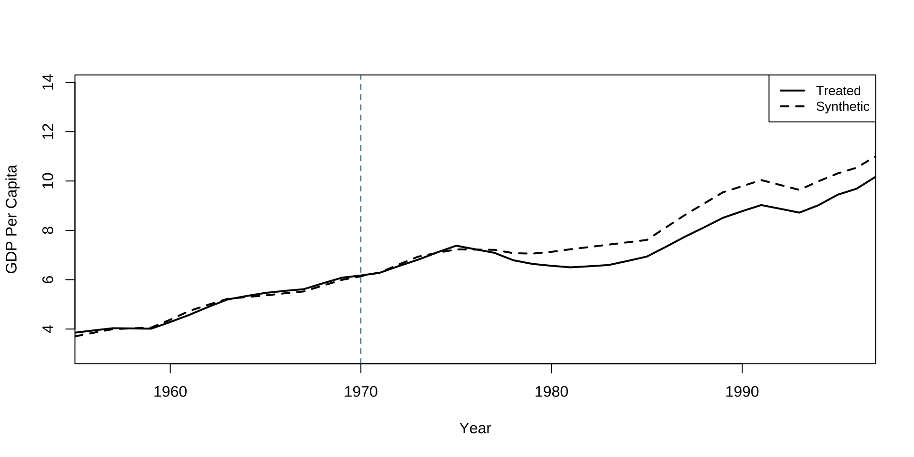
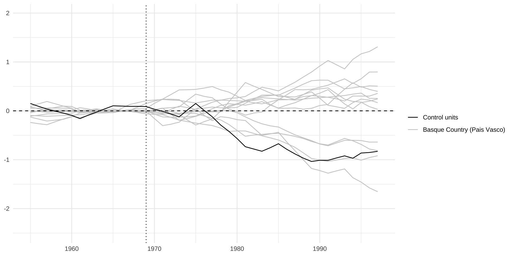
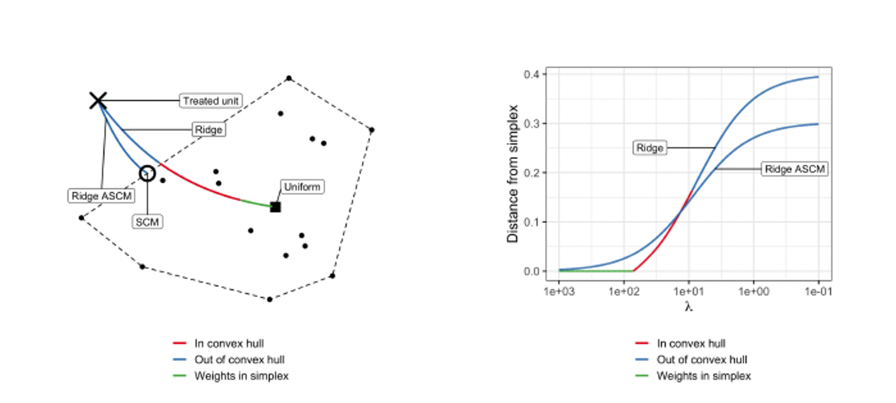
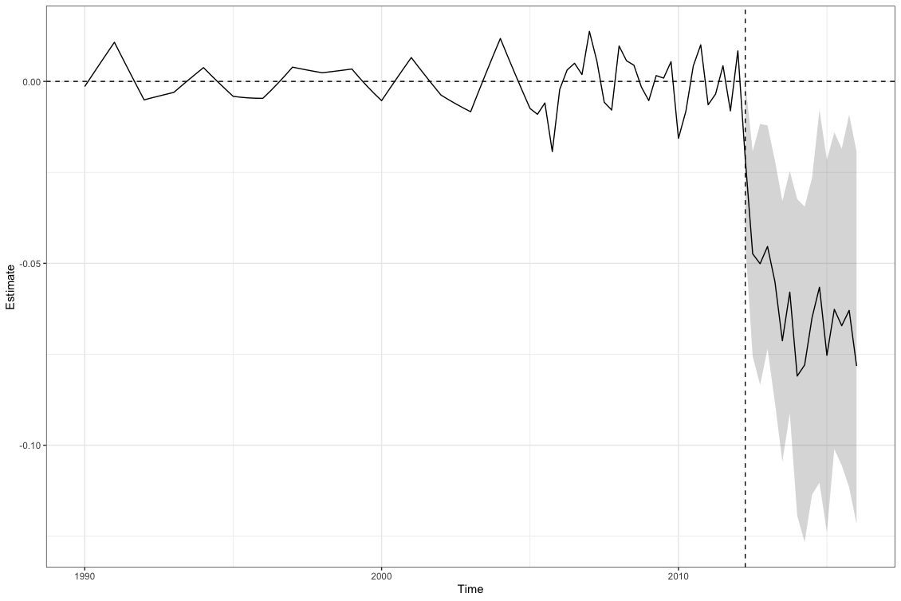
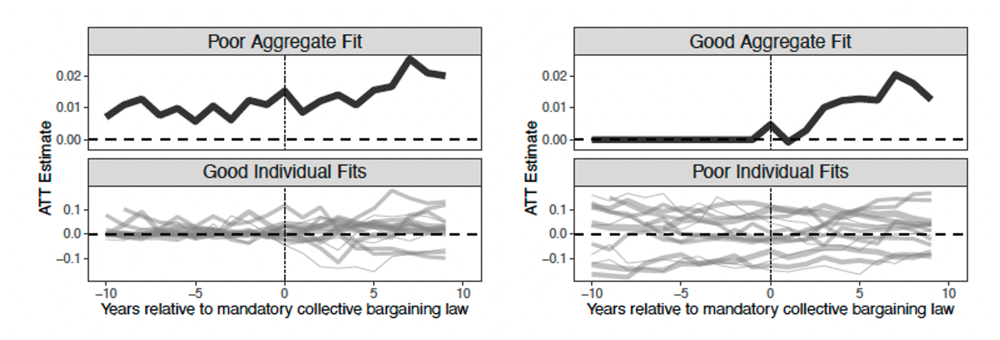
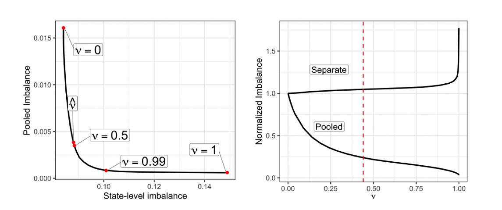

(9) Synthetic Controls
Causal Data Science for Business Analytics
Hamburg University of Technology
Monday, 1. July 2024
Basic Model
Motivation
“Synthetic control approach developed by Abadie, Diamond, and Hainmueller (2010, 2014) and Abadie and Gardeazabal (2003) is is arguably the most important innovation in the policy evaluation literature in the last 15 years.” (Athey and Guido W. Imbens, 2017)
What if parallel trends really isn’t realistic?
- Create your own control group that follows approximately the same trajectory as your treatment group pre-treatment.
Originally designed for comparative case studies:
- Compare a single aggregate unit (like a country, state, school, firm, etc.) that is subject so some natural experiment (policy, event) to a
synthetic control unit. - Weighted average of untreated units in order to best resemble the treated unit before the intervention in terms of relevant covariates.
- Compare a single aggregate unit (like a country, state, school, firm, etc.) that is subject so some natural experiment (policy, event) to a
Example
- Assess the effect of the terrorist conflict in the Basque region on GDP per capita based on a synthetic control created from other Spanish regions.
library(Synth)
library(SCtools)
data(basque)
dataprep.out <- dataprep(
foo = basque,
predictors = c("school.illit", "school.prim", "school.med", # define covariates: school degrees and investment as share of GDP
"school.high", "school.post.high", "invest"),
time.predictors.prior = 1964:1969, # define pre treatment period to average covariates over
special.predictors = list( # addtional predictors with special periods to average over
list("gdpcap", 1960:1969 ,"mean"), # pre-treatment outcomes - GDP
list("sec.agriculture", seq(1961, 1969, 2), "mean"), # production in different sectors
list("sec.energy", seq(1961, 1969, 2), "mean"),
list("sec.industry", seq(1961, 1969, 2), "mean"),
list("sec.construction", seq(1961, 1969, 2), "mean"),
list("sec.services.venta", seq(1961, 1969, 2), "mean"),
list("sec.services.nonventa", seq(1961, 1969, 2), "mean"),
list("popdens", 1969, "mean")), # population density
dependent = "gdpcap",
unit.variable = "regionno",
unit.names.variable = "regionname",
time.variable = "year",
treatment.identifier = 17, # treated unit
controls.identifier = c(2:16, 18), # control units
time.optimize.ssr = 1960:1969, # periods to optimize over
time.plot = 1955:1997)
synth.out = synth(dataprep.out)
path.plot(dataprep.res = dataprep.out, synth.res = synth.out,Xlab="Year",Ylab="GDP Per Capita")
abline(v=1970,lty=2,col="#005e73")
# average treatment effect on the treated over post-treatment period
mean(dataprep.out$Y1plot[16:43] - (dataprep.out$Y0plot[16:43,] %*% synth.out$solution.w))
[1] -0.5799225Notation and Setup
- \(i = 1, \ldots, N + 1\) units (countries, regions, firms, etc.).
- \(t = 1, \ldots, T_t\) time periods.
Unit 1is treated during periods \(T_0 + 1, \ldots, T_t\).- Remaining N units are an untreated “donor pool”.
- \(Y_{it}(0)\): outcome that would be observed for unit i at time t without treatment
- \(Y_{it}(1)\): outcome that would be observed for unit i at time t with treatment in periods \(T_0 + 1\) to \(T_t\).
- Group-time specific ATT (with only one treated unit):
- \(\tau_{1t} = Y_{1t}(1) - Y_{1t}(0) = Y_{1t} - Y_{1t}(0) \quad \forall \quad t > T_0\)
- Estimate \(Y_{1t}(0)\) by weighting the N units in the donor pool.
Weighting Untreated Units
Weights: \(\mathbf{W} = (w_2, \ldots, w_{N+1})'\), with \(w_i \geq 0\) and \(\sum_{i=2}^{N+1} w_i = 1\).
- Each \(\mathbf{W}\) defines a potential synthetic control unit.
\(\mathbf{X_1}\) is a \(k \times 1\) vector of pre-intervention covariates for the treated unit.
\(\mathbf{X_0}\) is a \(k \times N\) matrix of pre-intervention covariates for the donor pool.
\(\mathbf{X_1}\) and \(\mathbf{X_0}\) can include (the same) covariates over different pre-intervention periods and also pre-intervention outcomes.
Find \(\mathbf{W}* = (w_2^*, \ldots, w_{N+1}^*)\) that minimizes \(\| \mathbf{X}_1 - \mathbf{X}_0 \mathbf{W} \|\), subject to the weight constraints.
Synthetic control estimator: \(\hat{\tau}_{1t} = Y_{1t} - \sum_{i=2}^{N+1} w_i^* Y_{it} \quad \forall \quad t > T_0\).
Data Structure
- Units \(i\) in rows and periods \(t\) in columns; assuming:
- Only one pre-treatment covariate \(X\) observed for all \(i\) and all \(t\) (couild also be the pre-treatment outcome).
- Only one post-treatment period \(T = T_0 + 1\).
\[ \begin{equation} \left( \begin{array}{c|c} \begin{matrix} X_{11} & X_{12} & \cdots & X_{1T_0} \\ \hline X_{21} & X_{22} & \cdots & X_{2T_0} \\ \vdots & \vdots & \ddots & \vdots \\ X_{N1} & X_{N2} & \cdots & X_{NT_0} \end{matrix} & \begin{matrix} Y_{1T} \\ \hline Y_{2T} \\ \vdots \\ Y_{NT} \end{matrix} \end{array} \right) \equiv \left( \begin{array}{c|c} \begin{matrix} \mathbf{X}_{1} \\ \hline \mathbf{X}_{0} \\ \end{matrix} & \begin{matrix} Y_{1T} \\ \hline \mathbf{Y}_{0T} \\ \end{matrix} \end{array} \right) \end{equation} \]
Goal of the
verticalimputation & estimation approach:Impute \(Y_{1T_t}(0)\) by a weighted-average of \(\mathbf{Y}_{0T_t}\).
Estimate weights such that \(\mathbf{X}_{0}\) reproduce \(\mathbf{X}_{1}\).
Optimal Weights
- Optimal weights \(\mathbf{W}^*\) differ by another weighting matrix \(\mathbf{V}\):
- \(k \times k\) symmetric and positive semi-definite matrix, typically assumed to be diagonal:
- Constrained, nested optimization problem:
\[ \begin{aligned} \mathbf{W}^* = \arg\min_{\mathbf{W}} \| \sqrt{V}\mathbf{X}_1 - \mathbf{X}_0 \mathbf{W} \|_2^2 &= \arg\min_{\mathbf{W}} [(\mathbf{X}_1 - \mathbf{X}_0 \mathbf{W})' \mathbf{V} (\mathbf{X}_1 - \mathbf{X}_0 \mathbf{W})] \\ &= \arg\min_{\mathbf{W}} \sum_{m=1}^{k} v_m \bigg( X_{1m} - \sum_{i=2}^{N+1} w_iX_{im}\bigg)^2 \\ \end{aligned} \]
- Subject to: \(w_i \geq 0\) and \(\sum_{i=2}^{N+1} w_i = 1\).
\(v_m\) is the weight assigned to the \(m\)-th covariate should reflect:
its relative importance for the discrepancy between treated and control units.
its predictive power on the counterfactual outcome of the treated unit 1: \(Y_{1t}(0)\).
Estimating the V Matrix
The synthetic control shaped by \(W^*(V^*)\) to reproduce the behavior of the outcome variable for the treated unit in the absence of the treatment.
Choice of \(V^*\) matrix is critical as it directly shapes the \(W^*\) matrix.
Cross-validationto minimize out-of-sample prediction error:- Divide the pre-treatment period into a training and a validation period.
- For any initialized V, calculate \(W(V)\) in the training period.
- Apply the \(W(V)\) to calculate the Mean Squared Predcition Error (MSPE) in the validation period:
- \(MSPE = \frac{1}{T_0} \sum_{t=1}^{T_0} (Y_{1t} - \sum_{i=2}^{N+1} w_i^*(V*) Y_{it})^2\).
- Select the \(W^*(V^*)\) that minimizes the MSPE in the validation period.
Inference
- Inference is based on permutation:
- Permutation distribution obtained by iteratively reassigning the treatment to the units in the donor pool and estimating
placebo effectsin each iteration.
- Permutation distribution obtained by iteratively reassigning the treatment to the units in the donor pool and estimating
- The effect of the treatment on the unit affected by the intervention is deemed to be significant when its magnitude is extreme relative to the permutation distribution.
p-Value: proportion of placebo effects with a largerPost-MSPE/Pre-MSPE-ratio than the actual treatment effect.- Permutation distribution is often more informative than mechanically looking at p-values alone.
- Depending on the number of units in the donor pool, conventional significance levels may be unrealistic or impossible.
- Often, one sided inference is most relevant.
Example: Inference
library(Synth)
library(SCtools)
# generate placebo tests
placebo <- generate.placebos(dataprep.out = dataprep.out,synth.out = synth.out, strategy = "multisession")
# p-value: how extreme the treated unit’s ratio is in comparison with that of placebos.
# but filter out control units with extreme MSPE ratios
# resulting from poor fit in the pre-treatment period
mspe_test(placebo, discard.extreme = TRUE, mspe.limit = 5)
# plot placebo tests, but filter out control units with extreme MSPE ratios
# resulting from poor fit in the pre-treatment period
plot_placebos(placebo, discard.extreme = TRUE, mspe.limit = 5)$p.val
[1] 0.8571429
$test
MSPE.ratios unit
1 399.28801 Andalucia
2 76.85500 Aragon
3 7767.20471 Principado De Asturias
4 55.67757 Canarias
5 2564.77781 Cantabria
6 470.57144 Castilla Y Leon
7 22.92823 Castilla-La Mancha
8 32.11487 Cataluna
9 114.23552 Comunidad Valenciana
10 90.72002 Galicia
11 130.86336 Murcia (Region de)
12 167.21979 Navarra (Comunidad Foral De)
13 156.15636 Rioja (La)
14 55.64514 Basque Country (Pais Vasco)
Augmented Synthetic Controls
Motivation of Augmented Synthetic Controls
- Synthetic control (SC) forces weight to be non-negative, which implies a
convex hull constraint:- Counterfactual formed by a weighted combination of control units without extrapolating outside of their convex hull (similar to common support concept).
- Higher validity of the estimated effect based on a more feasible control unit.
- But also higher chance of a bad pre-treatment fit, so that you should not use the method (Abadie, et al., 2015).
- Only few pre-treatment periods.
- \(\mathbf{X_1}\) is outside the convex hull of \(\mathbf{X_0}\).
- OLS Regressions to obtain weights \(\mathbf{W}\):
- Horizontal, i.e. \(\mathbf{Y}_{0T}\) on \(\mathbf{X}_{0}\), or vertical, i.e. \(\mathbf{X}_{1}\) on \(\mathbf{X}_{0}\).
- Better (often perfect) pre-treatment fit.
- But weights are not sparse.
- But negative weights for some control units, extrapolating outside the support of data.
Augmented Synthetic Controls: Approach
- Augmented Synthetic Controls (Ben-Michael, Feller & Rothstein, 2021) as a middle ground:
- Assess pre-treatment imbalance via an
outcome modeland reweigh the original SC model with the new weights. - Augmentation is
doubly robust:- Either the SC model or the outcome model needs to be correct.
- Allow for negative weights as little as necessary and sparse weights through regularization.
- Different outcome models available in the R package ‘augsynth’:
- Ridge regression, Elastic Net, Random Forest, Factor Model (gSynth), Matrix Completion (MCPanel), Bayesian structural time series estimation (CausalImpact), Sequence to sequence learning (seq2seq)
- Assess pre-treatment imbalance via an
Augmented Synthetic Controls: Estimator
- Augmented SC estimator to impute the counterfactual outcome \(\hat{Y}_{1T}(0)\) is given by:
\[ \begin{align*} \hat{Y}_{1T}^{\text{aug}}(0) &= \overbrace{\sum_{i=2}^{N+1} \hat{w}_i^{\text{sc}} Y_{iT}}^{\text{SC estimate}} + \overbrace{\left( \hat{m}_{1T} - \sum_{i=2}^{N+1} \hat{w}_i^{\text{sc}} \hat{m}_{iT} \right)}^{\text{imbalance correction}} \\ &= \underbrace{\hat{m}_{1T}}_{\text{outcome model}} + \underbrace{\sum_{i=2}^{N+1} \hat{w}_i^{\text{sc}} (Y_{iT} - \hat{m}_{iT})}_{\text{"IPW-like" re-weights to balance residuals}} \end{align*} \]
- \(\hat{m}_{iT} = \hat{m}(\mathbf{X_i})\): predicted post-treatment outcome (nuisance parameter) for the (un-) treated units as function of pre-treatment covariates (and / or outcomes).
Ridge Regression as Outcome Model
- Estimator for the post-treatment outcome is linear in pre-treatment covariates / outcomes:
- \(\hat{m}(\mathbf{X_i}) = \hat{\eta}_0 + \mathbf{X_i}' \mathbf{\hat{\eta}}_x\).
- \(\hat{\eta}_0\) and \(\mathbf{\hat{\eta}}_x\) are the coefficients of a ridge regression of control post-treatment outcomes \(\mathbf{Y}_{0T}\) on centered pre-treatment outcomes \(\mathbf{X}_{0}\) with shrinkage penalty hyperparameter \(\lambda\):
- \(\{\hat{\eta}_0, \mathbf{\hat{\eta}}_x\} = \arg\min_{\eta_0, \mathbf{\eta}_x} \frac{1}{2} \sum_{i=2}^{N+1} \left( Y_i - (\eta_0 + \mathbf{X}_i' \mathbf{\eta}_x) \right)^2 + \lambda \|\mathbf{\eta}_x\|_2^2\)
- Ridge Augmented SCM estimator is then given by:
- \(\hat{Y}_{1T}^{\text{aug}}(0) = \sum_{i=2}^{N+1} \hat{w}_i^{\text{sc}} Y_{iT} + \left( \mathbf{X_1} - \sum_{i=2}^{N+1} \hat{w}_i^{\text{sc}} \mathbf{X_i} \right) \cdot \mathbf{\hat{\eta}}_x\)
- \(\lambda\) should be chosen via cross-validation among pre-treatment periods.
Extrapolation and Regularization
Conformal Inference
Four steps according to Chernozhukov, Wüthrich, Zhu (2021):
- For a given sharp null hypothesis, \(H0 : \tau_{1T} = \tau_0\), create an adjusted post-treatment outcome for the treated unit \(\tilde{Y}_{1T} = Y_{1T} − \tau_0\) and extend the original data set to include the adjusted outcome \(\tilde{Y}_{1T}\).
- Apply the augmented SC estimator to obtain adjusted weights \(\mathbf{\hat{W}}(\tau_0)\).
- Compute a p-value by assessing whether the adjusted residual \(Y_{1T} - \tau_0 - \sum_{i=2}^{N+1} \hat{w}_i(\tau_0) Y_{iT}\) “conforms” with the pre-treatment residuals:
\[p(\tau_0) = \frac{1}{T} \sum_{t=1}^{T_0} 1 \left\{ \left| Y_{1T} - \tau_0 - \sum_{i=2}^{N+1} \hat{w}_i(\tau_0) Y_{iT} \right| \leq \left| Y_{1t} - \sum_{i=2}^{N+1} \hat{w}_i(\tau_0) Y_{it} \right| \right\} + \frac{1}{T}\]
- Inverting this test to construct a confidence interval for \(\tau\) is equivalent to constructing a conformal prediction set for \(Y_{1T}(0)\) by using the quantiles of pre-treatment residuals:
\[\hat{C}_Y^{\text{conf}} = \left\{ y \in \mathbb{R} \left| \left| y - \sum_{i=2}^{N+1} \hat{w}_i (Y_{1T} - y) Y_{iT} \right| \leq q_{T, \alpha}^+ \left( \left| Y_{1t} - \sum_{i=2}^{N+1} \hat{w}_i (Y_{1t} - y) Y_{it} \right| \right) \right. \right\}\]
Augmented Synthetic Controls: Example
- Assess the impact of personal income tax cuts in Kansas on gross state product (GSP) per capita.
library(augsynth)
data(kansas)
attach(kansas)
# outcome ~ treatment | auxillary covariates
results <- augsynth(lngdpcapita ~ treated | lngdpcapita + log(revstatecapita) +
log(revlocalcapita) + log(avgwklywagecapita) +
estabscapita + emplvlcapita,
unit = fips,
time = year_qtr,
data = kansas,
progfunc = "Ridge",# function to use to impute control outcomes
scm = T) # whether to use the SCM
summary(results) # summarize the results
plot(results) # plot the results
# percentage change from the logged treatment effect
(exp(-0.0609)-1)*100 = -5.9%
Call:
single_augsynth(form = form, unit = !!enquo(unit), time = !!enquo(time),
t_int = t_int, data = data, progfunc = "Ridge", scm = ..2)
Average ATT Estimate (p Value for Joint Null): -0.0609 ( 0.14 )
L2 Imbalance: 0.054
Percent improvement from uniform weights: 86.6%
Covariate L2 Imbalance: 0.005
Percent improvement from uniform weights: 97.7%
Avg Estimated Bias: 0.027
Inference type: Conformal inference
Time Estimate 95% CI Lower Bound 95% CI Upper Bound p Value
2012.25 -0.021 -0.044 0.002 0.058
2012.50 -0.047 -0.081 -0.019 0.039
2012.75 -0.050 -0.083 -0.012 0.031
2013.00 -0.045 -0.074 -0.022 0.034
2013.25 -0.055 -0.083 -0.022 0.025
2013.50 -0.071 -0.110 -0.033 0.025
2013.75 -0.058 -0.091 -0.025 0.024
2014.00 -0.081 -0.119 -0.037 0.027
2014.25 -0.078 -0.116 -0.024 0.013
2014.50 -0.065 -0.114 -0.006 0.040
2014.75 -0.057 -0.110 0.000 0.050
2015.00 -0.075 -0.124 -0.022 0.037
2015.25 -0.063 -0.106 -0.014 0.022
2015.50 -0.067 -0.106 -0.019 0.025
2015.75 -0.063 -0.101 -0.009 0.028
2016.00 -0.078 -0.127 -0.030 0.019Staggered Timing
Motivation
Allow multiple units and differential treatment timing, even of parallel trends assumption is violated.
- When staggered Difference-in-Differences (DiD) does not work then.
Goal: find a coherent way to manage multiple synthetic controls and aggregating them into a single parameter estimate.Challenge: balance the imperfect biases in the pooled and the separate unit-level estimates.Solution: Partially-pooled synthetic control (Ben-Michael, Feller & Rothstein, 2021b).
Different Approaches
SeparateSynthetic Control: Estimate separate SC models for each treated unit.- Only works if there is good fit good for each unit.
- Poor average fit leading to biased average treatment effect as target parameter.
PooledSynthetic Control: Minimize the average pre-treatment imbalance across all treated units.- Can achieve nearly perfect fit for the average treated unit.
- Can yield substantially worse unit-specific fits.
Partially-pooledSynthetic Control (Ben-Michael, Feller & Rothstein, 2021b): Minimize a weighted average of the two imbalances.- Modify the optimization problem to target overall and unit-specific fit.
- Account for the level differences with an intercept shift.
Setup and Notation
- Outcome \(Y_{it}\) obersved for \(i = 1 ... N\) individuals and \(t = 1 ... T_t\) time periods.
- \(T_i\) is the time period that unit \(i\) is treated.
- where \(T_i = \infty\) denoting never-treated units.
- can order units by treatment timing: \(T_1 \leq T_2 \leq ... \leq T_N\).
- \(N_0 = \sum_{i=1}^N 1\{T_i = \infty\}\) is the number of never-treated units.
- \(J = N - N_0= \sum_{i=1}^N 1\{T_i \neq \infty\}\) is the number of (eventually) treated units.
- Differentiate them with index \(j = 1 ... J\).
- Potential outcomes \(Y_{it}(g)\) depend on time (\(t\)) and time you were first treated (\(g\)).
- Individual treatment effect at time \(t\) if treated at \(g\): \(\tau_{i,t}(g) = Y_{i, t}(g) - Y_{i, t}(\infty)\).
- No anticipation: \(Y_{it}(T_i) = Y_{it}(\infty)\) for \(t < T_i\).
Estimands
- Treatment effect after event time \(k\):
- \(\tau_{j, k} = Y_{j, T_j + k}(T_j) - Y_{j, T_j + k}(\infty)\).
- \(\tau_{j, k} = 0\) for any \(k < 0\) (no anticipation).
- Average Treatment Effect on the Treated (ATT) \(k\) periods after treatment:
- \(\tau_k = \frac{1}{J} \sum_{j=1}^J \tau_{j, k} = \frac{1}{J} \sum_{j=1}^J Y_{j, T_j + k}(T_j) - Y_{j, T_j + k}(\infty)\).
- Average post-treatment effect:
- \(\tau = \frac{1}{K+1} \sum_{k=0}^K \tau_k\).
Estimator
- \(w_{ij}\) is the weight on unit \(i\) in the synthetic control for unit \(j\).
- \(N\)-by-\(J\) matrix of weights: \(W = [w_{ij}]\).
- Average Treatment Effect on the Treated (ATT) \(k\) periods after treatment: \[ \begin{aligned} \hat{\tau}_k = \frac{1}{J} \sum_{j=1}^J \hat{\tau}_{jk} &= \frac{1}{J} \sum_{j=1}^J \left[ Y_{jT_j + k} - \sum_{i=1}^N \hat{w}_{ij} Y_{iT_j + k} \right] \\ &= \frac{1}{J} \sum_{j=1}^J Y_{jT_j + k} - \sum_{i=1}^N \frac{1}{J} \sum_{j=1}^J \hat{w}_{ij} Y_{iT_j + k} \end{aligned} \]
- Equation highlights two equivalent interpretations of the estimator:
- average of unit-specific SCM estimates.
- SCM estimate for the average treated unit.
Optimization Problem
- Optimize either the sum of the unit-specific imbalances:
- \(q_X^{\text{sep}}(\mathbf{W}) = \sqrt{\frac{1}{J} \sum_{j=1}^J \left\| \mathbf{X}_j - \sum_{i=1}^N w_{ij} \mathbf{X}_i \right\|_2^2}\)
- Or optimize the imbalance of the pooled imbalance:
- \(q_X^{\text{pool}}(\mathbf{W}) = \left\| \frac{1}{J} \sum_{j=1}^J \mathbf{X}_j - \sum_{i=1}^N w_{ij} \mathbf{X}_i \right\|_2\)
- Instead, optimize the weighted average of the two (normalized) imbalances \(\tilde{q}\):
- \(\mathbf{W}^* = \arg\min_{\mathbf{W}} \left( \nu \left( \tilde{q}^{\text{pool}}(\mathbf{W}) \right)^2 + (1 - \nu) \left( \tilde{q}^{\text{sep}}(\mathbf{W}) \right)^2 + \lambda \| \Gamma \|_F^2 \right)\)
Optimization Problem: Trade-off
Optimization Problem: Role of \(\nu\)
Intercept-Shifts
- Unit-specific imbalances can be further improved by adjusting for level differences.
- Adjust for level differences by adding an intercept to the optimization problem:
- \(\hat{Y}_{j, T_j + k}^*(\infty) = \hat{\alpha}_j + \sum_i \hat{w}_{ij}^* Y_{i, T_j + k}\)
- \(\hat{\alpha}_j\) is the average pre-treatment difference between treated unit & synthetic control:
\[ \begin{aligned} \hat{\alpha}_j &= \frac{1}{L_j} \sum_{\ell=1}^{L_j} Y_{j, T_j - \ell} - \frac{1}{L_j} \sum_{i=1}^N \sum_{\ell=1}^{L_j} \hat{w}_{ij}^* Y_{j, T_j - \ell} \\ &= \bar{Y}_{j, T_j}^{\text{pre}} - \sum_i \hat{w}_{ij}^* \bar{Y}_{i, T_j}^{\text{pre}} \end{aligned} \]
- Treatment effect estimate is weighted difference-in-differences:
- \(\hat{\tau}_{jk} = \left( Y_{j, T_j + k} - \bar{Y}_{j, T_j}^{\text{pre}} \right) - \sum_{i=1}^N \hat{w}_{ij}^* \left( Y_{i, T_j + k} - \bar{Y}_{i, T_j}^{\text{pre}} \right)\).
Optimization Problem: Intercept-Shifts
- Intercept-Shifted Partially-pooled SCM improves the optimization frontier.
- With uniform weights, “stacked” (two-period, two-groups) Difference-in-Differences is obtained.
SC with Staggered Timing: Example
- Next Week!
Synthetic Difference-in-Differences
Synthetic Difference-in-Differences
- Next Week!
| Thank you for your attention! | |

|
|
Causal Data Science: (9) Synthetic Controls